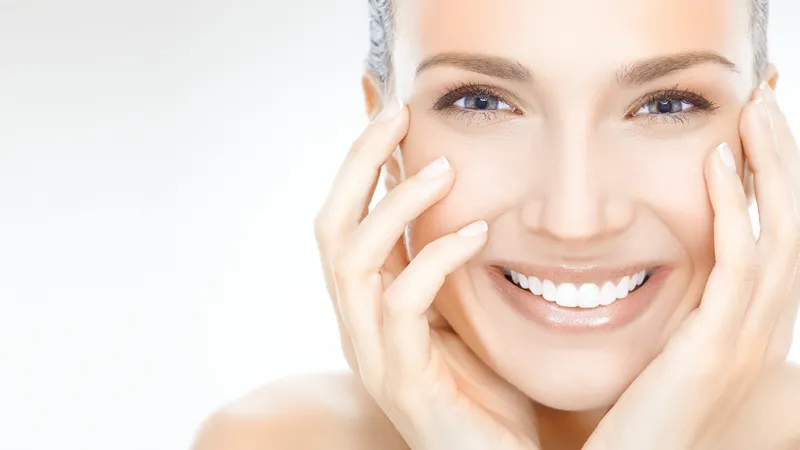

What is Accutane?
Accutane Information
Accutane is a Vitamin A formulation used for treating severe forms of nodular acne. The drug lowers the activity of oil glands in the skin, making it healthier and able to renew itself faster. Accutane is usually prescribed in cases where other anti acne drugs have manifested themselves to be ineffective.
Taking Accutane
Take Accutane exactly as prescribed by your doctor. You may be scheduled additional checks and blood tests while taking the drug, so make sure to not miss any single of them. Take Accutane with enough food or milk, don't chew or crush the tablet as the content may cause irritation.
Accutane is known to cause severe side-effects in new born babies so make absolutely sure you're not pregnant or are going to become pregnant during or after a short time after the medication course. FDA strongly imposes birth control mechanisms to be employed during the course of Accutane.
Never share Accutane with anyone else even if the person has the same problems and diagnosis as you have.
Store it in a dry and dark place at room temperature.
Accutane warnings and precautions
Avoid taking vitamins and dietary supplements containing Vitamin A during your course of Accutane. Being a form of Vitamin A itself, you may experience overabundance of the substance, which may be harmful to your health.
Do not donate blood while taking Accutane and for at least 3 months after the course. The donated blood may be given to pregnant women, which in turn would result in severe side effects in the fetus development.
Avoid tanning and excessive exposure to the light, waxing or laser hair removal procedures as the sensitivity of the skin will be increased and this may result in bruising.
Accutane side-effects
In case you have symptoms of allergy to Accutane you should seek medical assistance as soon as possible: swelling, hives, difficulty breathing. Some of the more serious side effects that require you to stop taking the medications and contact your doctor immediately include:
- mood swings, aggressive or depressive behavior, sleep disorders, suicidal tendencies
- sudden numbness or weakness in certain regions of the body
- • vision problems, headaches and pain in the eyes
- • hearing issues
- • convulsions
- • vomiting, nausea, increased heart rate
- • diarrhea, problems with stools and urine, yellowing of the skin and eyes
- • flu symptoms, pains in joints, weakness, easy bleeding or bruising, bone fracture
Less serious symptoms you may experience while using Accutane may include:
- • pain in the back in joints
- • skin problems
- • acne becoming more severe temporarily
Missed dose
Never take a double dose of the drug. If you have forgot about taking the drug, skip the dose and carry on with your schedule just as always. Take the drug around the same time every day.
- • Say goodbye to acne
- • What acne is anyway?
- • The best drug for acne. A personal story
- • Treating acne in a proactive fashion